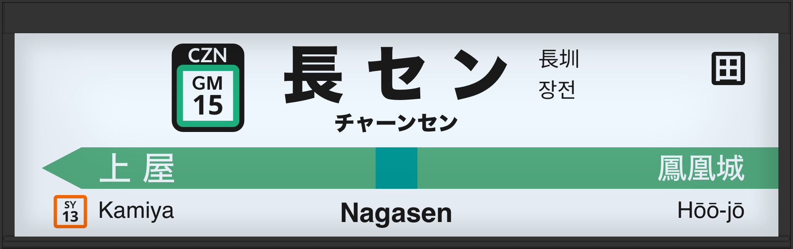

JR东日本 站名牌生成器
首页
日语
关于
请以正确的格式输入
显示输入的内容
重置输入内容
保存站牌！
获取共享URL
复制
如遇字体展示异常 请先加载字体哦
加载日语字体(M+ 1p)(约700KB ～ 约1.6MB)
加载中文字体(Noto Sans SC)(约1.5MB～约2.2MB)
加载韩语字体(Noto Sans KR)(约1MB～约2.1MB)
设定站名牌
灯箱类型
SE-6型(LED)
SE-7型(LED)
SE-8型(LED)
开/关灯💡
编号・4国语言
右分叉
左分叉
用于替换黑色的颜色
站名{{numbering? "・编号" : ""}}
站名 日本語(漢字)
站名 英語(English)
{{c}}
站名 日本語(平假名)
站名 汉字(简体)
Google翻译く
站名 韩语(한국어)
Google翻译く
车站代码是否打开
车站三字母代码
请用3个字母输入。
编号を增加
编号{{i + 1}}
请输入1个字母以上和2个数字以上
清除
左边的车站{{branchLeft? " 上行" : ""}}
站名 日本語(漢字)
站名 英語(English)
{{c}}
朝着此方向的腰带颜色
是否有开往这个方向的列车
编号を增加
编号{{i + 1}}
请输入1个字母以上和2个数字以上
清除
左駅 下
駅名 日本語(漢字)
站名 英語(English)
{{c}}
朝着此方向的腰带颜色
是否有开往这个方向的列车
编号を增加
编号{{i + 1}}
请输入1个字母以上和2个数字以上
清除
右边的车站{{branchRight? " 上" : ""}}
駅名 日本語(漢字)
站名 英語(English)
{{c}}
朝着此方向的腰带颜色
是否有开往这个方向的列车
编号を增加
编号{{i + 1}}
请输入1个字母以上和2个数字以上
清除
右边的车站 下
駅名 日本語(漢字)
站名 英語(English)
{{c}}
朝着此方向的腰带颜色
是否有开往这个方向的列车
编号を增加
编号{{i + 1}}
请输入1个字母以上和2个数字以上
清除
特定都区市内标记
增加
文字
请输入一个字
是否涂满
清除
线条颜色
增加
选择颜色
清除